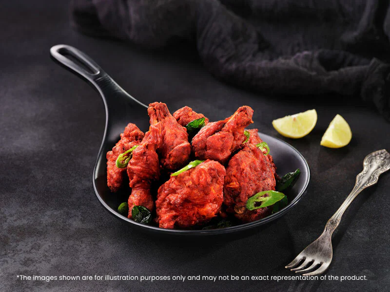

Home
Chicken65

Description
This is a spicy, dry chicken recipe from India that is great for serving as an appetizer at parties.
Ingredients
- 2 pounds skinless, boneless chicken breasts, cut into bite-sized pieces
- ¼ cup fresh curry leaves, chopped, or more to taste
- 2 tablespoons plain yogurt
- 2 teaspoons chili powder
- 2 teaspoons ground coriander
- 2 teaspoons garam masala
Preparation
- Mix chicken, curry leaves, yogurt, garlic paste, chili powder, coriander, garam masala, and ginger together. Cover and let marinate in a refrigerator for 2 hours.
- Add a few drops of red food coloring and mix so that chicken becomes tinted with red.
- Heat 2 inches oil in a deep saucepan over medium heat. Lower chicken pieces carefully into the hot oil, working in batches, and fry, stirring frequently, until browned and no longer pink in the centers, about 5 minutes. Transfer to a plate lined with paper towels to drain. Repeat with remaining chicken pieces.